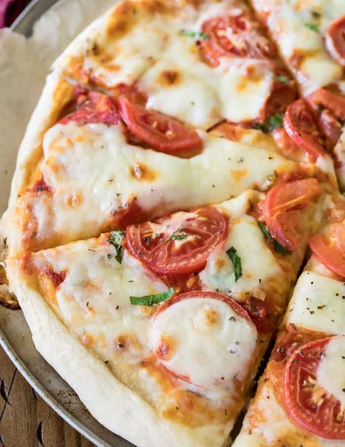

MARGARİTA PİZZA TARİFİ
Malzemeler
Hamuru için:
- 5 su bardağı un
- 1 aket instant maya (10 gr)
- 1,5 su bardağı ılık süt
- Yarım su bardağı sıvı yağ
- 1 adet yumurta
- 1 tatlı kaşığı tuz
Hamurun üst sosu için:
- 2 yemek kaşığı domates salçası
- 6 yemek kaşığı sıvı yağ
- 2 tatlı kaşığı kekik
- 2 çay kaşığı tuz
Pizzanın üst malzemesi için:
- 400 gr. mozzarella peynir
- 14 - 15 adet çeri domates
- 200 gr permasan peynir
- Sivri biber
- 12 - 13 yaprak fesleğen
Yapılışı
- Önce hamur için malzemelerin hepsini bir kapta karıştırıp, yumuşak bir hamur elde ediyoruz.
- Ağzını streçle kapatıp 30 dakika mayalanmaya bırakıyoruz.
- Mayalanan hamuru iki eşit parçaya bölüp pizza tepsisinin büyüklüğünde açıyoruz (İki tepsininde boyutu yaklaşık 40 cm olmalıdır).
- Pizzanın hamuru pişerken fazla kabarmaması için çatalla her tarafını deliyoruz.
- Hamurun üzerine sosu kaşıkla sürüyoruz.
- Hamurun üzerine üst malzemeleri diziyoruz.
- 200 derecelik fırında yaklaşık 20 dakika pişiriyoruz.
- Fırında pişince fırının kendi sıcaklığında 5 dakika dinlendiriyoruz.